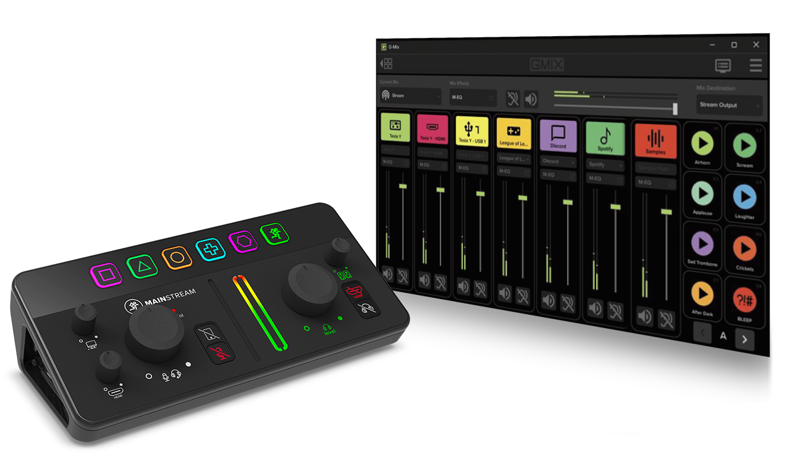

Mackie Matrix Console
iPad Pro M2
.mackie V1/V2 Native
Inicializando motor de enrutamiento 9 Canales × 4 Submixes...
🎵 Probar Audio en Canales
⏹ Stop Audio
📂 Importar .mackie
💾 Exportar .mackie
📹 Ir a MainStream UVC Studio
🎚️ Consola 9×4
📈 EQ 5 Bandas & MVoice
🎹 32 Sample Pads (A–D)
ECUALIZADOR PARAMÉTRICO DE 5 BANDAS (ARRASTRA LOS NODOS B1–B5 CON APPLE PENCIL O DEDO)
Preset `.mackie`:
SAMPLER EN VIVO DE 32 PADS (AUDIO MP3 REAL DE TUS BANCOS MACKIE Y OBS)
Banco A (Mackie)
Banco B (OBS Favoritos)
Banco C (Extra OBS 1)
Banco D (Extra OBS 2)